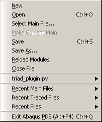
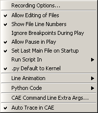

Abaqus PDE basics#
The following sections describe the basic functions of the PDE.
Starting the Abaqus Python development environment#
You can choose from several methods to start the Abaqus Python development environment. If you plan to work on scripts that use the Abaqus/CAE GUI, you should start the Abaqus PDE from within an Abaqus/CAE session or start it from the command prompt when you start Abaqus/CAE. These startup methods link the Abaqus PDE to the corresponding Abaqus/CAE session. Alternatively, you can start the Abaqus PDE independently to save system memory or avoid using an Abaqus license.
Use one of the following methods to start the Abaqus PDE. The first two methods start the Abaqus PDE with a link to an Abaqus/CAE session. The last method starts the Abaqus PDE independently from Abaqus/CAE:
In Abaqus/CAE, select FileAbaqus PDE from the main menu bar.
From a system command prompt, enter
abaqus cae -pde
where abaqus is the command used to start Abaqus.
Note:
Using this method starts Abaqus/CAE without any local user preference settings. Ignoring user preferences allows you to record and run .guiLog tests using the consistent default startup settings.
From a system command prompt, enter
abaqus pde [filenames] [-script filename] [-pde Abaqus/CAE command line arguments]
where abaqus is the command used to start Abaqus, and filenames are the names, including the directory paths, of scripts to be opened at startup.
The -script option allows you to enter the name, including the directory path, of a main file to be opened at startup. The Abaqus PDE will create a new blank script if the named file does not exist in the specified directory. If the directory does not exist, the Abaqus PDE generates an error message.
Note
File names and paths specified without the -script option are opened for editing—not as the main file.
The -pde option is used to specify options for use with Abaqus/CAE if you run a script in the Abaqus PDE that requires the Abaqus/CAE kernel or user interface. You can also add command line options for Abaqus/CAE using the Settings menu. For more information, see Selecting the settings for use with a file.
The sections that follow describe how to use the menus and tools within the Abaqus PDE.
Managing files in the Abaqus PDE#
You can use the File menu and tools to manage files in the Abaqus PDE. You can work with multiple scripts, but you can test only one script at a time. The file to be tested is called the Main File. The path and file name of the main file are displayed near the upper left corner of the Abaqus PDE window. You can open the main file by using the Select Main File or Recent Main Files items in the File menu. You can also create a new main file or select an open file to be the main file.
Note:
When the Set Last Main File on Startup setting is toggled on, the Abaqus PDE automatically reopens the main file that was open when you closed your last session.
The default file extensions for use with the Abaqus PDE are .py and .guiLog. A .py file typically designates a standard Python or Abaqus Scripting Interface script, and a .guiLog file is a specialized Python script that records actions in the Abaqus/CAE GUI.
As you play a main file script, the Abaqus PDE automatically opens any files that contain functions called by the script, if the files are available in the current path (sys.path). These files are added to the recently used files list in the File menu. The Abaqus PDE also saves a list of recently used files and other files (dependent files) called when you run a main file. This list is saved in the current directory as abaqus_pde.deps.
Figure 1 shows the items in the Abaqus PDE File menu.
{kind=link}

Figure 1. The File menu#
The following options are available from the File menu:
New
Create a new file. The Abaqus PDE creates a new main file and displays it in the main window. The file is created using the default naming convention _abaqus*#*_.guiLog, where # starts at 1 and is incremented as you create more files in the current directory. You can also click the New guiLog icon to create a new file.Abaqus automatically designates the new script as the main file.
Open
Open a script. You can also click the Open file icon to open a script.If you have not yet opened or created another script, Abaqus automatically makes the first opened file the main file for testing. Otherwise, the file opened becomes the current file viewed in the main window, but it is not the main file used for testing.**Tip:** You can drag and drop script files from the desktop or from Windows Explorer into the Abaqus PDE for editing.You can navigate to the file you want to open by entering its full path, or you can specify a path using environment variables.
Select Main File
Open a script as the main file for testing. You can also click the Open main file icon to open a script as the main file.
Make Current Main
Designate the current script in the main window as the main file for testing.
Save
Save changes to the current file. You can also click Save to save the current file.
Save As
Save the current file with a new name.
Reload Modules
Reload user interface modules to capture any changes that you made since they were first loaded. You can also click Reload Modules to reload the user interface modules. The Abaqus PDE reloads user interface modules in the Abaqus/CAE GUI and Abaqus/CAE kernel processes unless the current setting for the Run Script In option is local, in which case any changed modules are reloaded in the local PDE process.
Close File
Close the current file.
Filename.py
The name and file extension of the current main file, if one is selected.Clicking here shows a list of dependent files that were found when the main file was run. If the current main file has not been run in the Abaqus PDE, this list will be empty.
Recent Main Files
A list of the files that you have opened as the main file for testing. Recent Files from previous sessions will be read from the abaqus_pde.deps file, if it exists in the current directory.
Recent Traced Files
A list of files that were opened by the Abaqus PDE to trace a function called by one of the main files that you tested. Recent Files from previous sessions will be read from the abaqus_pde.deps file, if it exists in the current directory.
Recent Files
A list of all files that you have opened, regardless of whether you opened them to view and edit them or opened them as the main file for testing. Recent Files from previous sessions will be read from the abaqus_pde.deps file, if it exists in the current directory.
The recently used files lists are stored in the abaqus_pde.deps file in the directory from which you start the current Abaqus PDE session. If you start an Abaqus PDE session from another location, the lists contain only the files that you used the last time you opened a session in that directory. If you have not previously used the Abaqus PDE in the current directory, a new set of recently used files is recorded as you work.
Editing files in the Abaqus PDE#
You can use the Edit menu to edit scripts in the Abaqus PDE. The Edit menu contains common editing tools, including Undo, Redo, Copy, Cut, Paste, Find, and Replace. It also contains the following tools for editing scripts:
Indent Region >
Unindent Region <
Comment Region ##
Uncomment Region
To use these tools, highlight one or more lines of code in the main window and select the desired option from the Edit menu. The Edit menu also contains a keyboard shortcut for each of the editing tools.
Selecting the settings for use with a file#
Use the Settings menu and tools to change some of the options in the Abaqus PDE.
Figure 1 shows the items and default selections in the Abaqus PDE Settings menu.
{kind=link}

Figure 1. The Settings menu.#
The following items are available from the Settings menu:
Recording Options
Set the display of the triad, state block, and title block and whether the legend background matches the viewport. These options affect the commands recorded for an output database.
Allow Editing of Files
Toggle between edit and read-only modes for all files. Editing is allowed by default.
Show File Line Numbers
Display line numbers for any open files on the left side of the main window. Line numbers are displayed by default.
Ignore Breakpoints During Play
Run the main file continuously, skipping any breakpoints, until it completes or stops for an error. Breaks are not skipped by default. You can also skip breakpoints by toggling on Ignore breaks, located in the toolbar above the main window.
Allow Pause in Play
Pause a running file by clicking the Pause button. Pause is allowed by default. Allowing pause also causes the main file to run in the debugger. (For more information, see Using the debugger.)
Set Last Main File on Startup
Upon startup, automatically reopen the main file that was open when you last closed the Abaqus PDE.
Run Script In
Select whether the main file is run in the Abaqus/CAE GUI, the Abaqus/CAE kernel, or run locally. By default, .guiLog files are run in the GUI, and .py and other file types are run in the kernel. You can also set this option using the GUI, Kernel, and Local radio buttons located above the main window.If the Abaqus PDE was opened without Abaqus/CAE and you run a script with the GUI or Kernel process, the Abaqus PDE will start Abaqus/CAE to run the script.
.py Default to Kernel
Set .py files to run in the Abaqus/CAE kernel. This option is selected by default. If .py Default to Kernel is not selected, .py files are run locally. Select the GUI or Local radio button to run a Python script in one of these modes without changing the default behavior.
Line Animation
Highlight the line currently being executed in the main window. The following animation settings are available:
No animation.
Animate main file (default). Highlights only the statements in the main function or method. Functions called from the main script are not highlighted.
Animate main file functions. Highlights the main script statements and the statements in functions that are defined within the main file.
Animate all files. Highlights the main script statements and statements within all functions for which the source code is available.
Python Code
Control the appearance and editing behavior of Python scripts in the Abaqus PDE main window.
Syntax Coloring
Display the code using various font colors according to its purpose. This option is selected by default.You can view or change the color selections with the Choose Syntax Colors option.
Python Editing
Edit scripts with Python formatting, such as indentation, included automatically. This option is selected by default.
Choose Syntax Colors
Opens the PDE Syntax Colors dialog box in which you can view or change the color selections for editing scripts. Click Reset Defaults to restore the default colors.
CAE Command Line Extra Args…
Enter extra arguments for use when Abaqus/CAE is launched from the Abaqus PDE.
Auto Trace in CAE
Automatically trace code in GUI and kernel processes of Abaqus/CAE. The script will be traced until it returns from the frame in which the trace started. The trace will therefore stop when the function returns or the end of the script is reached. This option is selected by default.
The message area and GUI command line interface#
The message area and the GUI command line interface share the space at the bottom of the Abaqus PDE, similar to the kernel command line interface in Abaqus/CAE. (For more information, see Components of the main window.) The message area is displayed by default. It displays messages and warnings as you run scripts in the Abaqus PDE.
The GUI command line interface is hidden by default, but it uses the same space occupied by the message area. Click in the bottom left corner of the Abaqus PDE main window to switch from the message area to the GUI command line interface. The GUI and kernel processes in Abaqus/CAE run separately, each using its own Python interpreter. You can use the GUI command line interface to type Python commands and to evaluate mathematical expressions using the Python interpreter that is built into the Abaqus/CAE GUI. You can use the kernel command line interface in Abaqus/CAE for similar tasks. Each command line interface includes primary (>>>) and secondary (…) prompts to indicate when you must indent commands to comply with Python syntax. After you use the GUI command line interface, click to display the message area.
{kind=link}
{kind=link}
If new messages are generated in the message area while the GUI command line interface is active, the background around the message area icon turns red. The background reverts to its normal color when you display the message area.